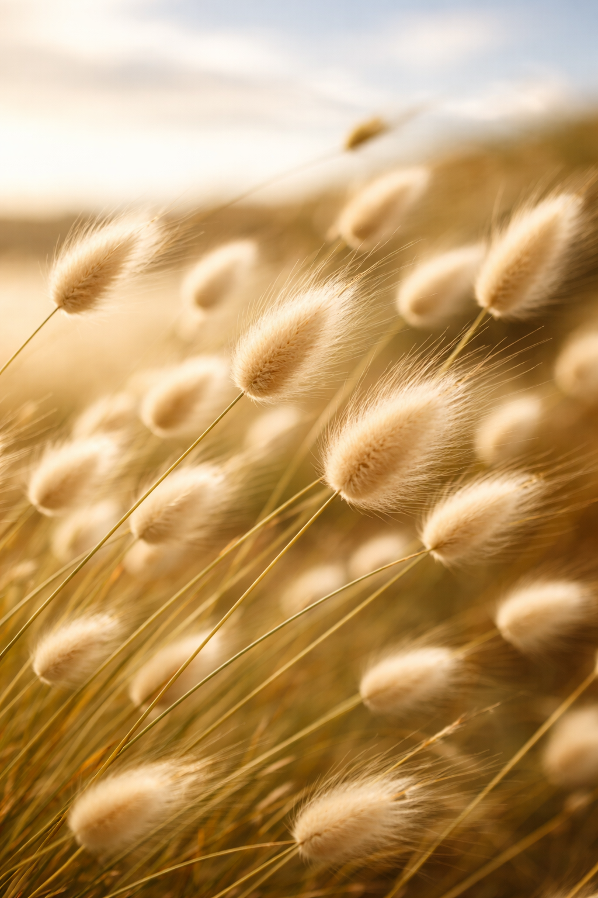

die hasie-sterte wieg in die wind
’n tussenspel van lug en son en aard
ongekoreografeerd - aangedryf deur vlae van wind
dans elke saadklos in eie ritme, elke passie uniek.
nooit stil of geknak,
buig hul eerbiedig na die aarde waar hul geanker is
om weer in port de bras te reik na die son
onvermoeid en onverpoosd
soos die Sufi Dervish
in sy eenheid met Allah
dans, dans, dans…
vir hier - vir nou
Fanã